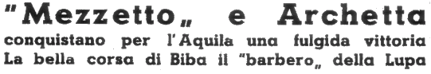

|
 Doveva essere un Palio di ordinaria amministrazione ed è stato un Palio tremendo, con una vigilia tormentata, inquietissima, fatta di paure e di speranze. Molti cavalli nuovi, quasi tutti di provato valore, in gamba quelli vecchi, secondo alcuni i favoriti. Sul Palio si proietta la sete di vittoria dell'Istrice, l'occasione è favorevole per la Contrada di Camollia che stando ai si dice, compie uno sforzo eccezionale che la pone in una posizione di primo piano. Poi ci sono la Giraffa con Gaudenzia, l’indimenticata cavallina "ai trionfi avvezza", il Bruco con Ravi II, il morellino compagno di scuderia di Gaudenzia, che in batteria batteva chiaramente Archetta, il Drago con Roccalbegna che tra tutti i barberi in gara vanta il migliore record, il Leocorno con la balda e giovanile Tanaquilla, la Torre con il promettente Mariolo, non si rassegna in partenza, il Montone che ricorda come i competenti nel 1955 ponessero Velka tra i favoriti. Un grande imbarazzo per i dirigenti delle Contrade. Alcuni si rassegnano: giungeremo al Palio per la strada dell’oro, ricorreremo ai "professori" strapagati della Piazza, ai fantini che se vogliono possono vincere, ma che fino all'ultimo momento ti fanno stare in paura, perchè le loro promesse valgono come quelle dei marinai. Gli altri, la minoranza, ricordano che il Palio è rischio, che conviene puntare sui giovanissimi, su coloro che non hanno malizia od esperienza, ma che hanno tanto cuore, tanta intrepida sete di Palio, che si buttano all’assalto. Le prove non diminuiscono certamente l’incertezza, i favoriti si affacciano quasi tutti alla ribalta della vittoria, altri provano scappate, tutti tengono più o meno il cavallo. Una prova, è elettrizzante ed è quando due ragazzini-fantini come Mezzetto e Biba, duellano magnificamente, spingendo a sangue i cavalli. Ecco il Palio: si lotta con il tempo, perchè le cateratte del cielo stanno per aprirsi, si corre sotto un’acqua sottile e penetrante, la pista luccica di un argenteo molle. Ecco i barberi entrano al canape: Torre (fantino Tristezza), Civetta (Bazza), Istrice (Ivan), Aquila (Mezzetto), Leocorno (Pietrino), Montone (Remo), Bruco (Gentili), Lupa (Biba), Drago (Lazzaro). Entra la Giraffa (Arzilli) di rincorsa, scatta il canape, la matassa aggrovigliata di un Palio terribile, uno di quelli che costano dieci anni di vita, si dipana rapidamente, le ultime ipotesi, le ultime speranze, gli ultimi sogni vengono macinati dal ritmare dei secondi, ora è la realtà del Palio, ora è il dramma che scoppia, ora sono in tanti a sentirsi rubare dal cuore l'ultimo tesoro, due soldi di speranza che il Palio aveva elargito a tutti, quasi, quest'anno, da gran signore, facendo un elenco interminabile di favoriti, festeggiando nel modo migliore il suo trecentesimo compleanno. Dall’arco dei dieci cavalli al canape scocca una freccia gialla: è il giubbetto di Francesco Cuttone che i senesi hanno battezzato Mezzetto, per la sua statura di "Bagonghi" della Piazza. E’ l'ottava volta che Mezzetto corre il Palio, tre volte è arrivato secondo, primo mai. Il frustino pende inerte da una mano del piccolo siciliano, le sue braccia sono strette intorno al collo di Archetta, le due piccole gambe si stendono verso la schiena della vecchia cavalla. Archetta e Mezzetto, soli contro tutti, soli contro il destino si avventano sul tufo della pista, striato d’argento dalla pioggia, e chi sperava nei milioni deve ora inseguire, farsi largo, fare i conti con la terra bagnata . Mezzetto ed Archetta volano verso San Martino, il fantino ribelle, la cavalla che ha trovato al Palio la seconda giovinezza, agitano la bandiera del coraggio, del rischio, del valore, la bandiera del Palio di Siena. Nelle orecchie di Mezzetto risuona l'urlo di guerra, dei fantini giovanissimi che il Palio hanno salvato dalla china, dei fantini come Renzino, Rubacuori, il Cittino, Romanino, Luschi, la fantina Virginia, tutti quelli che vennero al Palio come si viene ad un’avventura che affascina e che ipnotizza e che non si vuole profanare con una speculazione. Corre verso la vittoria Mezzetto a nome di tutti i "picciotti" della Piazza, scrivendo un’altra pagina, quella più bella, più lieta e fortunata, nell’epopea del Palio che lo riguarda. Dietro il trionfo della vittoria, il dramma della sconfitta, i cavalli favoriti si rifiutano di correre sulla pista molle, i fantini che tentano di forzare, finiscono uno dopo l'altro a mordere di dispetto il tufo umido, come fanghiglia. Ottantaquattro secondi dura la galoppata di Archetta e di Mezzetto, ottantaquattro secondi che durano un’eternità e c’è posto, nel loro arco fuori del tempo per i tre secoli di storia del nostro Palio, la festa più tremenda ed affascinante che si sia vista al mondo, una corrida nella quale tutti gli spettatori divengono d’improvviso dei toreadors soli e sperduti nella grande arena. Archetta che già nell'Agosto 1955 aveva aiutato Romanino, un altro "guitto" ricco solo di coraggio a salire gli scalini della gloria, taglia vittoriosa il traguardo del suo terzo Palio. Enigmatico come una sfinge, scende Arzilli dalla bianca cavalla del capitano Giachetti, sconfitte come la sua hanno segreti che si custodiscono fino alla tomba. Terzo Biba, su Signorina, che in Vallerozzi dicevano essere il quindicesimo cavallo su dieci, Terzo al Palio, nello scontro di colossi, su una cavalla debole, un debuttante come Biba, un altro nome nuovo che i ragazzini hanno già imparato. Questo il Palio questa la sua legge vecchia e nuova, i "ribelli" ed i "picciotti" hanno sconfitto i loro prezzolati avversari, i "senatori" ed i "professori". Alcuni di essi, ingloriosamente, sono rimasti a terra, gli altri giungono ingruppati nelle ultime posizioni o si tolgono dalla montura la terra delle loro cadute. O adeguarsi o scomparire, il Palio è questo: una lotta terribile, non c’è posto per i compromessi. Sul cupo sfondo del cielo imbronciato, le bandiere gialle dell’Aquila portano l’eco e il profumo di un raggio di sole. Felici come quelli del Casato, quelli di Via Duprè, di Fontebranda, di Vallerozzi. A notte si befferanno gli sconfitti con trasporti dell'Elefante e del Riccio. Oggi e me, domani a te. Fino all’alba le donne del Casato, mentre i ragazzi fanno la sbandierata, canteranno l'impresa di Mezzetto, il fantino che non ebbe paura di avere coraggio e che salvò il Palio di Siena, il 2 luglio del 1956, a trecento anni dalla prima carriera in onore della Madonna di Provenzano. |